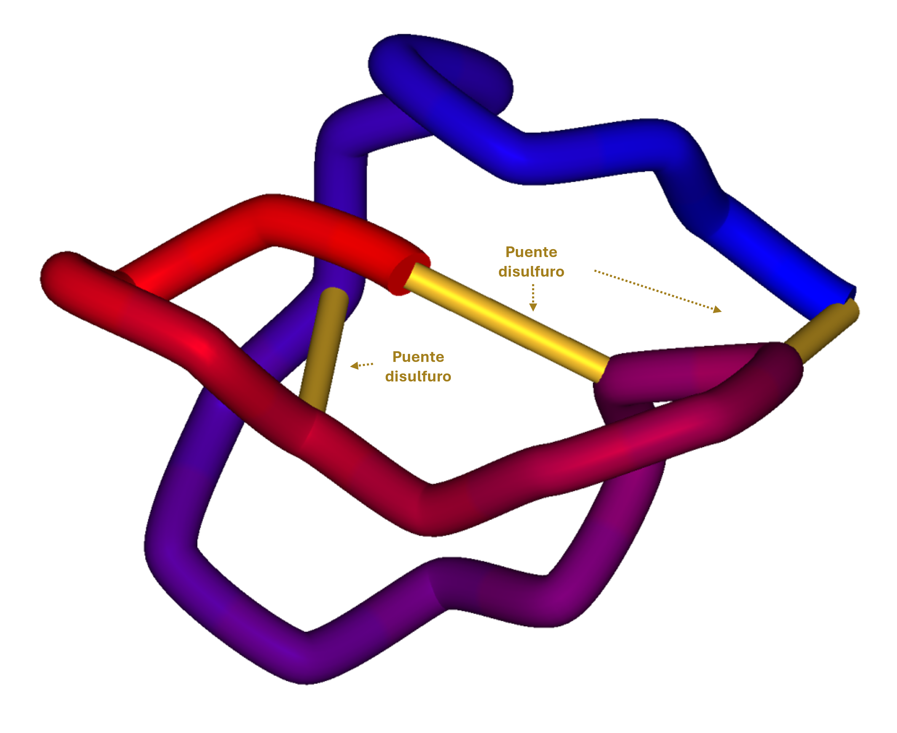
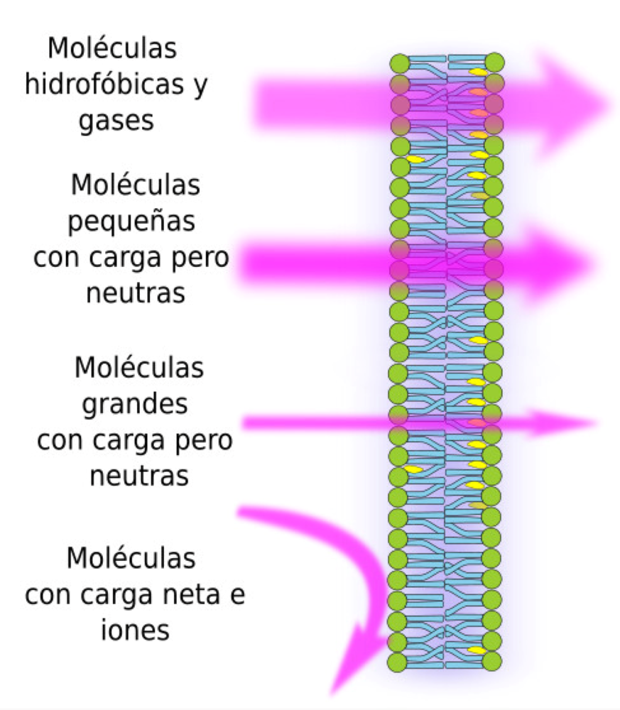
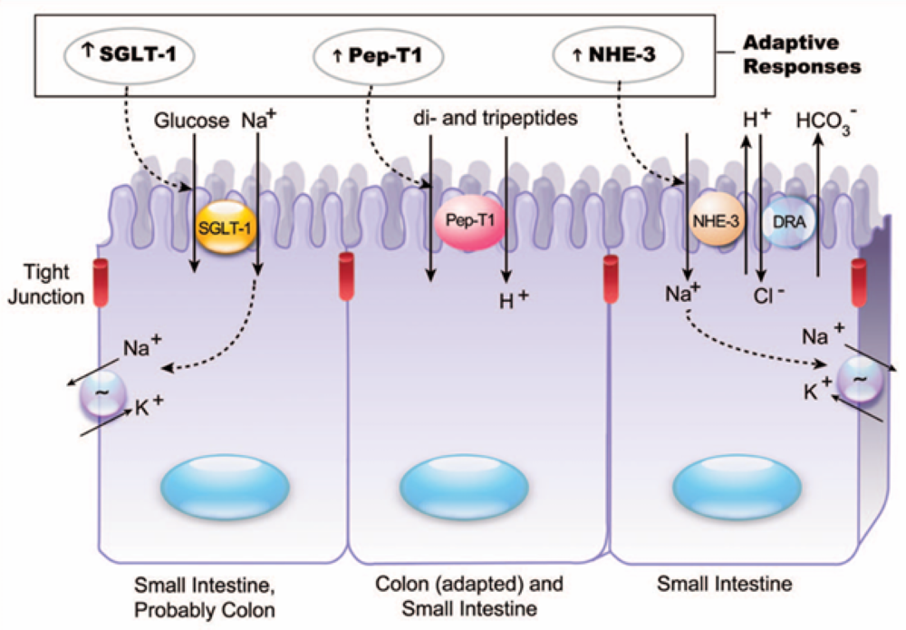

Farmacognosia
Tema 5: Aspectos 3D, Polaridad y Absorción de Compuestos Animales
🔬 "La forma y la carga definen la función biológica"
Tema 5: Aspectos 3D, Polaridad y Absorción de Compuestos Animales

Figura 1: La estructura 3D rígida de la ziconotida, estabilizada por 3 puentes disulfuro, es esencial para su unión al canal de calcio.

Figura 2: Relación entre el coeficiente de partición (LogP) y la capacidad de difusión pasiva a través de la bicapa lipídica.
| Propiedad | Moléculas Lipofílicas (Ej. CoQ10) | Moléculas Hidrofílicas/Polares (Ej. Glucosamina, Péptidos) |
|---|---|---|
| LogP | Alto (>2) | Bajo (<0) |
| Solubilidad | Lípidos/Grasas | Agua/Fluidos acuosos |
| Absorción | Difusión pasiva transcelular | Requiere transportadores (PepT1) o endocitosis |
| Desafío | Baja solubilidad acuosa | Baja permeabilidad de membrana, degradación enzimática |

Figura 3: El transportador PepT1 (SLC15A1) permite la absorción de péptidos pequeños (2-3 aminoácidos) acoplada a un gradiente de protones (H⁺).
Haz clic en la tarjeta para voltearla y ver la respuesta.
El GLP-1 natural es un péptido lineal hidrofílico que es rápidamente degradado por la DPP-4 en el tracto GI y tiene pobre permeabilidad de membrana. La exenatida, aunque también es un péptido, posee una sustitución de glicina en la posición 8 que le confiere una conformación 3D resistente al corte por DPP-4, extendiendo su vida media. Aun así, su naturaleza peptídica hidrofílica impide la absorción oral eficiente, requiriendo administración subcutánea.
La CoQ10 es altamente lipofílica (LogP alto) y de gran tamaño molecular, por lo que el polvo cristalino tiene una biodisponibilidad oral muy baja (no se disuelve en fluidos acuosos intestinales). El paciente debería buscar formulaciones en sistemas auto-nanoemulsionables, micelares o en cápsulas blandas con aceite, que facilitan su solubilización y absorción por difusión pasiva a través de la mucosa.
Frase: "El Doctor Tiene El Pasaporte"
Error: "Los péptidos bioactivos de la leche se absorben igual que los aminoácidos libres."
Error: "Si una molécula es pequeña, siempre se absorbe bien."
Error: "La CoQ10 es CoQ10, sin importar la presentación."
10 preguntas al azar de una base de 30. Cada vez que entras se sortea un nuevo ciclo.